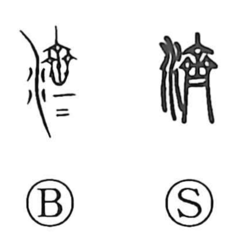

済

Uncategorized
Kun: sumu, sumasu, wataru, naru, sukuu | On: sai, sei
to settle ・ to finish ・ to accomplish ・ to be completed ・ to cross water ・ to pay off
Explanation
Originally written 濟, this is a phono-semantic character: the water element combines with the phonetic 齊, whose form depicts a woman in sacred service arranging her hair with three vertical hairpins—a picture of things neatly regulated and brought to a close. With water added, the image becomes that of completing a crossing, and by extension bringing matters to completion. From this, 済 comes to mean to accomplish and to have something be settled or concluded. In Japanese it appears in uses such as ki ga sumu, “to feel satisfied,” and shakkin o sumasu, “to pay one’s debts,” reflecting this core sense of finishing and setting things right.